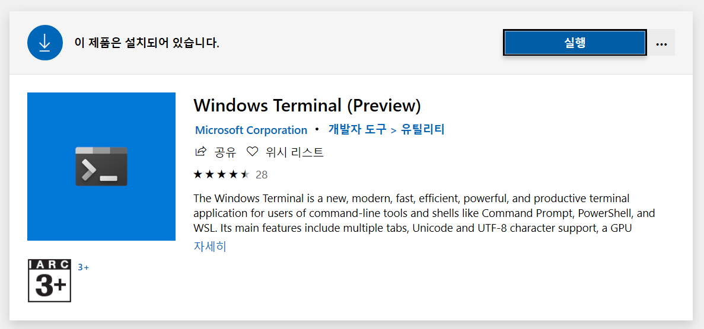
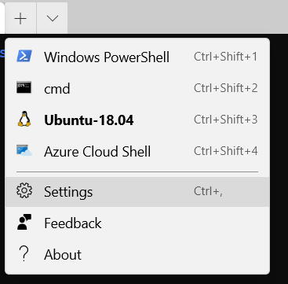
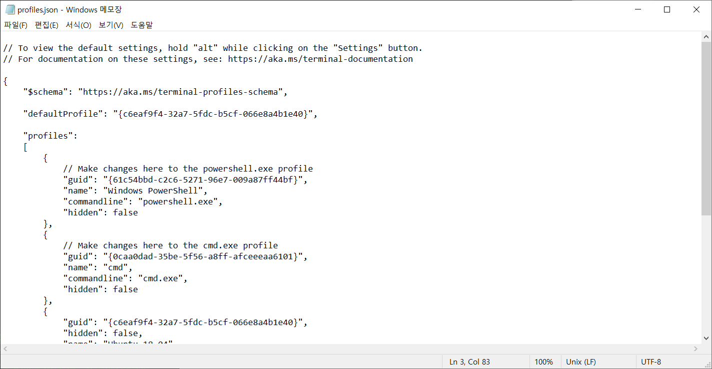
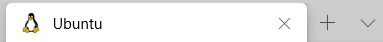
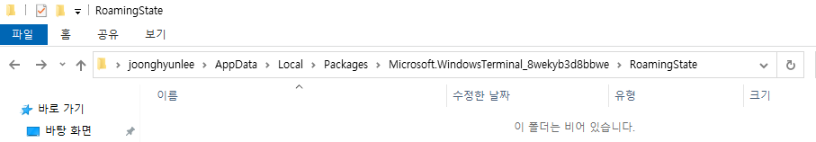
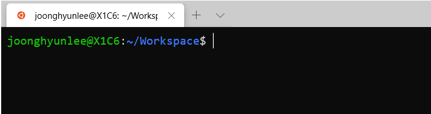
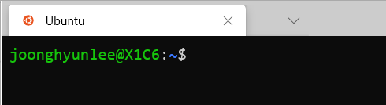
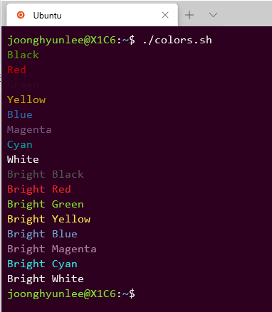

Terminal은 MicroSoft에서 기존 명령 프롬프트 및 PowerShell 터미널을 대체하고자 새로 출시한 터미널 프로그램이다. 기존 내장 터미널은 기능적이나 미적으로나 Mac/Linux 용 터미널에 비해 매우 떨어져 있던 것이 사실이다. 이에 반해 Terminal은 최신 터미널 프로그램에서 제공하는 다양한 기능을 제공할 뿐만 아니라 WSL까지도 지원하여 보다 나은 개발 환경을 제공한다. 개인적으로 WSL을 사용하면서 폰트 설정이나 개인화 설정이 불편을 겪었던 기억이 있어서, Terminal을 적극적으로 활용해보려고 노력해보았다.
설치 방법
Terminal 앱 설치 방법은 간단하다. MS 스토어에서 Windows Terminal을 검색하여 내려받자.

기본 프로파일 변경
Windows Terminal은 프로파일별로 원하는 Shell을 등록할 수 있게 되어 있다. 기본적으로 등록된 프로파일에는 Windows PowerShell, Command Prompt, WSL 등이 있다.
여기서는 WSL 프로파일을 기본으로 하도록 설정을 바꿔보자. Windows Terminal을 실행한 후 설정을 열자. 단축키 Ctrl + ,을 누르거나 상단 메뉴를 선택하여 설정을 열자.

그러면 아래와 같이 메모장이 열리면서 설정 파일이 나타난다.

이 설정에 대한 기본 포맷은 설정파일 상단의 링크(https://aka.ms/terminal-profiles-schema)를 참조하자.
설정의 profiles 필드에 등록된 프로파일에 대한 설정들이 나와 있다. 이 프로파일들 중 WSL에 해당하는 프로파일을 찾아서 guid 값을 확인한다. 이 값을 defaultProfile에 설정한다.
{
"defaultProfile": "{c6eaf9f4-32a7-5fdc-b5cf-066e8a4b1e40}",
"profiles":
[
{
"guid": "{c6eaf9f4-32a7-5fdc-b5cf-066e8a4b1e40}",
"hidden": false,
"name": "Ubuntu-18.04",
"source": "Windows.Terminal.Wsl"
},
],
}
수정한 설정을 반영하려면 Ctrl + s를 눌러 저장하면 된다.
시작 폴더 변경
WSL 프로파일을 처음 시작해보면 시작 폴더가 Window의 사용자 홈 폴더(%userprofile%)로 되어 있다. 매번 WSL 사용자의 홈 폴더로 이동하기는 번거로우므로 시작하자마 WSL 사용자 홈 폴더로 이동하도록 해보자. 아래와 같이 WSL 프로파일에 commandline 속성을 추가한다.
{
"guid": "{c6eaf9f4-32a7-5fdc-b5cf-066e8a4b1e40}",
"hidden": false,
"commandline": "wsl ~",
"name": "Ubuntu-18.04",
"source": "Windows.Terminal.Wsl"
}
프로파일 아이콘 변경
이제 기본적인 설정은 끝났다. 다 좋은데 이상하게 WSL 프로파일 탭을 열면 아이콘이 펭귄으로 되어 있다. Linux의 상징이라 잘 못된 것은 아니지만 개인적으로는 무척 별로다.

이 아이콘을 Ubuntu 아이콘으로 변경해보자. 아이콘을 변경하려면 우선 Terminal이 읽을 수 있는 폴더에 아이콘을 복사해 두어야 한다. 특정 위치에 있는 폴더를 지정해도 좋지만 여기서는 Terminal의 AppData 폴더로 아이콘을 옮겨보자. Terminal의 AppData 폴더는 아래와 같다.
%LOCALAPPDATA%\Packages\Microsoft.WindowsTerminal_8wekyb3d8bbwe\RoamingState
위의 경로로 이동하려면 Windows의 탐색기 경로 바에 입력하면 된다. 그럼 해당 위치로 이동할 수 있다.

이 폴더에 대체할 아이콘을 복사해두자. 여기서는 아래 이미지를 사용하였다.
이제 WSL 프로파일에 다음과 같이 icon 항목을 추가하자. 저장하면 탭 아이콘이 변경될 것이다.
{
"guid": "{c6eaf9f4-32a7-5fdc-b5cf-066e8a4b1e40}",
"hidden": false,
"commandline": "wsl ~",
"name": "Ubuntu-18.04",
"icon": "ms-appdata:///roaming/ubuntu.png",
"source": "Windows.Terminal.Wsl"
}
탭 이름 변경
아무런 설정을 하지 않으면 탭 이름이 프롬프트 명을 따라 간다. 만약 현재 경로가 길어지면 잘려서 보이는 문제가 있다.

역시 개인적인 취향으로는 차라리 고정 문구가 나오는 편이 좋을 것 같다. 여기서는 Ubuntu라고 출력하도록 하자. Ubuntu 파일에 다음 두 항목을 추가한다.
{
"tabTitle": "Ubuntu",
"suppressApplicationTitle": true,
}
저장하면 다음과 같이 반영된다. 편안

처음 화면 크기 변경
최초 구동할 때 화면의 크기를 설정하고 싶다면 아래와 같이 설정한다.
{
"$schema": "https://aka.ms/terminal-profiles-schema",
"globals" :
{
"initialCols" : 120,
"initialRows" : 30
}
}
단축키 설정
키 설정은 keybindings 필드에 등록하면 된다. 우선 탭 관리에 관한 단축키를 알아보자.
| 단축키 | 설명 |
|---|---|
| ctrl + shift + t | 새 탭 열기 |
| ctrl + shift + [1-8] | n번 째 프로파일 탭 열기 |
| ctrl + shift + w | 탭 닫기 |
| ctrl + tab | 다음 탭으로 이동 |
| ctrl + shift + tab | 이전 탭으로 이동 |
| ctrl + alt + [1-8] | n번 째 탭으로 이동 |
| ctrl + shift + space | 탭 메뉴 열기 |
| ctrl + shift + d | 현재 탭 복제하기 |
위 단축키들은 아래와 같이 등록된다. 같은 기능에 대한 단축키들은 여러 개 등록할 수 있다.
"keybindings" :
[
{
"command" : "closePane",
"keys" :
[
"ctrl+shift+w"
]
}
]
다음으로는 0.7 버전부터 추가된 Pane에 대한 단축키를 알아보자.
| 단축키 | 설명 |
|---|---|
alt + shift + - |
화면 수평 분할 |
alt + shift + + |
화면 수직 분할 |
| alt + down | 포커스 아래로 이동 |
| alt + left | 포커스 왼쪽으로 이동 |
| alt + right | 포커스 오른쪽으로 이동 |
| alt + up | 포커스 위로 이동 |
| alt + shift + down | 화면 크기 아래로 늘리기 |
| alt + shift + left | 화면 크기 왼쪽으로 늘리기 |
| alt + shift + right | 화면 크기 오른쪽으로 늘리기 |
| alt + shift + up | 화면 크기 위로 늘리기 |
테마 변경
마지막으로 테마 변경을 해보자. 기본적으로 제공하는 테마는 아래와 같다.
- Campbell
- One Half Dark
- One Half Light
- Solarized Dark
- Solarized Light
당연하게도 커스텀한 테마를 생성할 수도 있다. 커스텀 테마를 생성하려면 schemes 항목에 다음과 같이 추가해준다.
{
"schemes" :
[
{
"background" : "#0C0C0C",
"black" : "#0C0C0C",
"blue" : "#0037DA",
"brightBlack" : "#767676",
"brightBlue" : "#3B78FF",
"brightCyan" : "#61D6D6",
"brightGreen" : "#16C60C",
"brightPurple" : "#B4009E",
"brightRed" : "#E74856",
"brightWhite" : "#F2F2F2",
"brightYellow" : "#F9F1A5",
"cyan" : "#3A96DD",
"foreground" : "#CCCCCC",
"green" : "#13A10E",
"name" : "Campbell",
"purple" : "#881798",
"red" : "#C50F1F",
"white" : "#CCCCCC",
"yellow" : "#C19C00"
}
]
}
또한 아래와 같이 설정할 수 도 있다. 이 때 colors 배열의 순서는 black, red, green, yellow, blue, magenta, cyan, white, bright black, bright red, bright green, bright yellow, bright blue, bright magenta, bright cyan, bright white 이다.
{
"schemes" :
[
{
"name": "UbuntuLegit",
"foreground": "#EEEEEE",
"background": "#2C001E",
"colors": [
"#4E9A06",
"#CC0000",
"#300A24",
"#C4A000",
"#3465A4",
"#75507B",
"#06989A",
"#D3D7CF",
"#555753",
"#EF2929",
"#8AE234",
"#FCE94F",
"#729FCF",
"#AD7FA8",
"#34E2E2",
"#EEEEEE"
]
}
]
}
테마를 적용하려면 프로파일에 아래와 같이 colorScheme 항목을 추가한다.
{
"profiles":
[
{
"guid": "{c6eaf9f4-32a7-5fdc-b5cf-066e8a4b1e40}",
"hidden": false,
"commandline": "wsl ~",
"name": "Ubuntu-18.04",
"colorScheme": "UbuntuLegit",
"icon": "ms-appdata:///roaming/ubuntu.png",
"tabTitle": "Ubuntu",
"suppressApplicationTitle": true,
"source": "Windows.Terminal.Wsl"
}
]
}
테마 색상 설정을 확인하려면 아래의 스크립트를 실행하자.
#!/bin/bash
COLORS=(
"\e[30mBlack"
"\e[31mRed"
"\e[32mGreen"
"\e[33mYellow"
"\e[34mBlue"
"\e[35mMagenta"
"\e[36mCyan"
"\e[37mWhite"
"\e[90mBright Black"
"\e[91mBright Red"
"\e[92mBright Green"
"\e[93mBright Yellow"
"\e[94mBright Blue"
"\e[95mBright Magenta"
"\e[96mBright Cyan"
"\e[97mBright White"
)
for ((i = 0; i < ${#COLORS[@]}; i++))
do
echo -e ${COLORS[$i]}
done
위 스크립트 실행 결과는 다음과 같다.
